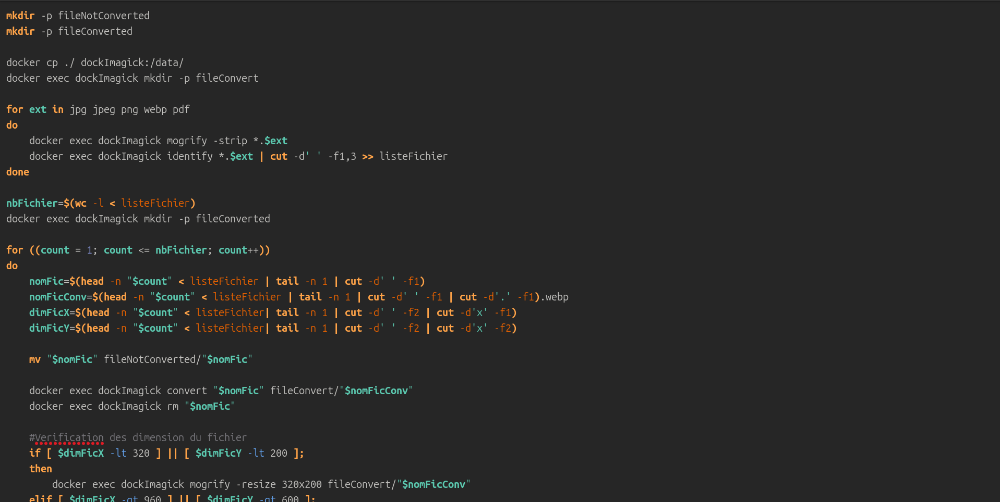
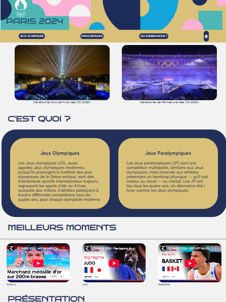
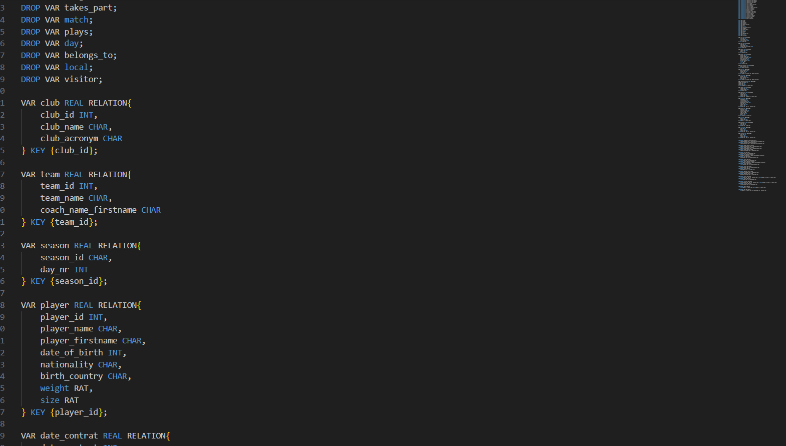
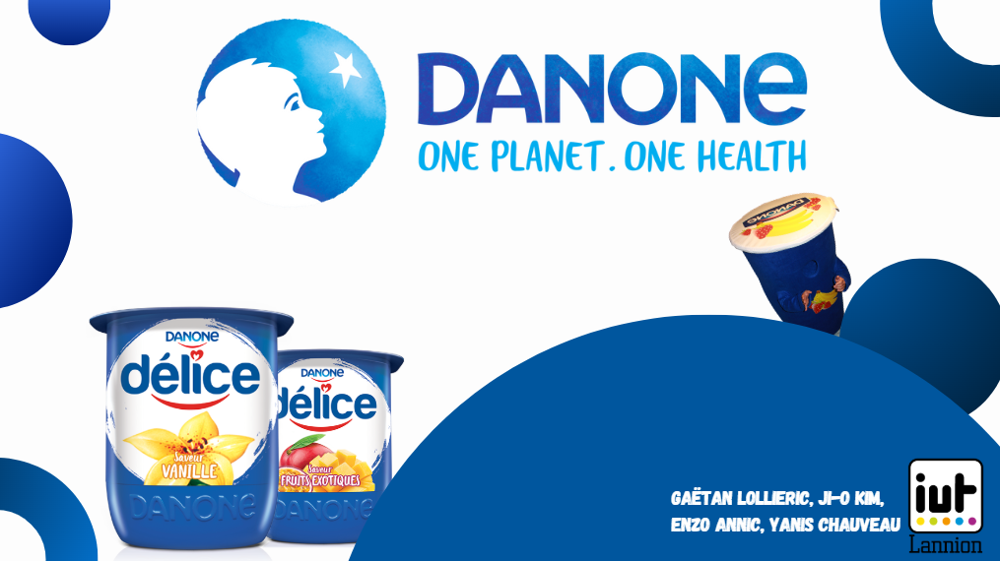
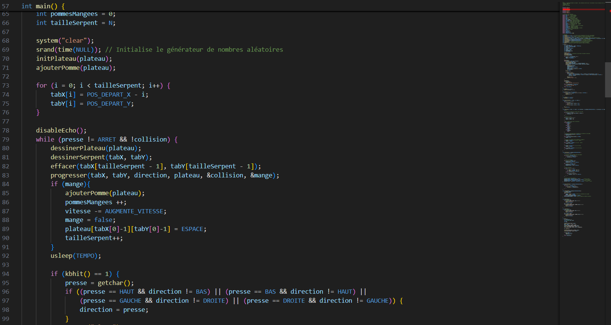

À propos
Bonjour ! Je suis Ji-O KIM, étudiant en 1ère année de BUT Informatique à l'IUT de Lannion. Je recherche une alternance dans le développement logiciel !
Formation
IUT Lannion
Formation de 3 ans pour un diplôme informatique.
> Lien vers l'IUT de Lannion
Lycée Générale et Technologique Auguste Pavue
Baccalauréat Générale Spécialité NSI, LLCER
Mes projets
A venir !
Mes compétences
Installation d’un poste de développement.

S - Situation :
Votre équipe travaille pour une ESN (Entreprise de Service du Numérique) mandatée par le Comité Olympique pour automatiser le
traitement des fichiers destinés au site Web des JO de Paris 2024. L'équipe chargée du site reçoit régulièrement des fichiers
aux formats variés et souvent inadaptés au Web, nécessitant une conversion et un nettoyage. Face à la récurrence des envois et
aux corrections fréquentes, le projet vise à automatiser ces tâches répétitives.
T - Tâche :
Développer des programmes automatisés des fichiers pour l'équipe des site des J-O,
comprenant, l'analyse des fichiers, la conversion des fichiers au bon format, le tri des données, la gestion des drapeaux
des pays et la génération d'un tableau de médailles.
A - Action :
- Analyser des fichiers et rédiger un rapport sur la compatibilité du site Web
- Convertir et automatiser des fichiers dans des formats exploitables (textes, images, csv)
- Télécharger automatiquement les drapeaux des pays, selon les données du tableau des médailles
- Générer un PDF qui génère les médailles de chaque pays, classement et statistiques
- Utiliser des conteneurs docker pour exécuter des programmes sans à avoir utilser des programmes
R - Résultat :
- Mise en place d'une chaine de traitement efficace et réutilisable
- Création de livrable, incluant des rapports: d'analyse, de fichiers convertis, de scrips de traitement et un PDF du tableau avec les médailles
- Une documentation complète, décrivant chaque étape du projet
- Une automatisation rapide et efficace, réduisant les erreurs possibles par un Homme
Recueil des besoins

S - Situation : Notre équipe doit réalisatier un site web destiné au Jeux-Olympiques 2024 qui se déroule à Paris
L'étape du recueil du besoin étant déjà faites, nous devons réaliser le maquettage du site, son arborescence, sa structure,
son érgonomie, le codage en HTML et CSS. Mais le site doit être également adapté aux téléphones.
T - Tâche : Concevoir une plateforme numérique destinée à partager des informations
sur les disciplines sportives, les épreuves, les athlètes et les valeurs de l'olympisme.
Le site doit assurer une accessibilité mondiale, valoriser la pratique sportive et offrir une expérience optimale
sur tous les supports, qu'ils soient ordinateurs, tablettes ou smartphones.
A - Action :
- Recueil des besoins et définition de l’arborescence du site pour assurer une navigation claire et efficace.
- Sélection des contenus pertinents et création d’une charte graphique cohérente avec l’identité visuelle des Jeux Olympiques Paris 2024.
- Conception des maquettes et développement des principales fonctionnalités, incluant :
- Une page d’accueil présentant des informations générales et le classement des médailles en temps réel.
- Des pages spécifiques dédiées aux disciplines sportives, aux épreuves et aux athlètes.
- Un espace pour le suivi des records olympiques et la diffusion des actualités.
- Mise en place d’une accessibilité renforcée, notamment pour un public international et les personnes malvoyantes.
- Réalisation de l’intégration technique et ajout d’un système de suivi statistique des visites du site.
R - Résultat :
- Stimuler l’engouement populaire et renforcer l’adhésion aux Jeux Olympiques et Paralympique.
- Faciliter l’accès au sport en créant des passerelles entre les utilisateurs et les fédérations sportives.
- Promouvoir l’image de la France à l’international, tant sur le plan sportif que culturel.
- Inspirer le public grâce à la mise en valeur des portraits d’athlètes et de leurs performances remarquables.
- Assurer une visibilité maximale auprès d’un large public, quel que soit le support de consultation.
Création de base de données

S - Situation : Dans le cadre d’un projet universitaire en Bases de Données, l’objectif est
de concevoir et implémenter une base de données permettant
de gérer les résultats des championnats de football, à partir d’un diagramme UML fourni
T - Tâche : Transformer un diagramme UML en modèle relationnel, en utilisant Tutorial D, et produire :
- Un fichier .rel permettant la création et la réinitialisation de la base de données.
- Un graphe des contraintes d’intégrité référentielles.
A - Action :
- Développement d’un fichier Tutorial D auto-exécutable assurant la création complète de la base.
- Élaboration d’un script SQL structurant les données et facilitant leur manipulation.
- Conception d’un graphe des contraintes d’intégrité avec un outil de modélisation adapté.
- Traduction des objets UML en relations SQL et mise en place des règles d’intégrité référentielles.
R - Résultat :
- Obtention d’une base de données fonctionnelle, prête à l’emploi et respectant les spécifications.
- Production d’un graphe des contraintes détaillé illustrant les dépendances entre les entités.
- Fourniture de livrables conformes aux attentes et exploitables dans un cadre pédagogique.
- Consolidation des compétences en modélisation relationnelle et en gestion des bases de données.
Snake automatisé
S - Situation :
Suite du projet réalisé dans au début de BUT1 Informatique à Lannion. L’objectif est de concevoir un programme autonome en langage C permettant à un serpent de se déplacer de manière optimisée pour
collecter des pommes, tout en comparant différentes approches algorithmiques.
T - Tâche : Développer un programme en C assurant le déplacement autonome du serpent, en intégrant :
- La gestion des obstacles.
- Des règles de déplacement spécifiques.
- Une optimisation des parcours pour collecter les pommes avec une efficacité maximale.
A - Action :
- Programmation en langage C avec application d’algorithmes de déplacement et de stratégies d’optimisation.
- Adaptation progressive du code pour gérer des contraintes évolutives : introduction d’obstacles, règles de mouvement spécifiques, gestion des interactions entre les éléments du plateau.
- Développement de stratégies de prise de décision autonomes pour le serpent, visant à améliorer son efficacité de parcours.
- Conception de procédures dédiées à la gestion du plateau et des éléments interactifs.
- Respect des conventions de codage et élaboration d’un cahier de tests pour valider les performances et la robustesse du programme.
R - Résultat :
- Production d’un programme fonctionnel capable de gérer le déplacement autonome du serpent dans des environnements contraints.
- Mesure des performances en termes de nombre de déplacements, temps CPU et efficacité de collecte des pommes.
- Consolidation des compétences en algorithmes de parcours, en gestion des obstacles et en traitement des interactions entre objets.
- Livraison d’un code source structuré, commenté et conforme aux bonnes pratiques de développement.
Envrionnement Economique

S - Situation :
Projet universitaire visant à réaliser une présentation (diaporama) et un rapport sur une entreprise
française reconnue. L’étude porte ici sur Danone et met
l’accent sur l’importance de la communication et de l’organisation au sein de l’équipe projet.
T - Tâche :
Concevoir un diaporama efficace et un rapport structuré, intégrant une analyse approfondie de l’entreprise :
- Historique, organisation interne, actions de Responsabilité Sociétale des Entreprises (RSE).
- Évaluation de l’engagement de l’entreprise et vérification de la conformité aux consignes pédagogiques.
A - Action :
- Recherche documentaire approfondie : exploitation du rapport annuel, consultation de la charte RSE, recherches en bibliothèque universitaire, analyses SWOT et PORTER.
- Organisation et collaboration structurées : répartition des tâches entre les membres, planification des réunions, utilisation d’outils collaboratifs en ligne.
- Analyse et synthèse des données : entretiens pour identifier les forces et faiblesses, veille stratégique continue, application de la méthode AGILE pour une gestion souple du projet.
- Production des livrables : création d’un diaporama structuré présentant l’entreprise, ses engagements RSE, son historique et la méthodologie employée ; rédaction d’un rapport concis, clair et orienté analyse.
R - Résultat :
- Production d’un diaporama clair et structuré, répondant aux attentes.
- Réalisation d’un rapport précis et analytique, intégrant des éléments stratégiques pertinents.
- Évaluation détaillée des engagements RSE d’Engie et vérification du respect des consignes du projet.
- Meilleure compréhension de l’organisation interne d’Engie grâce aux outils d’analyse stratégique comme SWOT et PORTER.
- Mise en œuvre efficace de méthodes de gestion de projet, telles que AGILE et veille stratégique.
Snake

S - Situation :
Projet réalisé dans au début de BUT1 Informatique à Lannion.
L’objectif est de concevoir et de développer une version fonctionnelle et évolutive du jeu Snake en langage C.
T - Tâche :
Développer le jeu Snake en intégrant les fonctionnalités essentielles et avancées, notamment :
- Le déplacement fluide du serpent.
- La gestion des entrées utilisateur.
- L’ajout de mécaniques de jeu évolutives.
- La détection des collisions.
A - Action :
- Programmation en langage C en utilisant des tableaux, des fonctions, des procédures et des structures de données adaptées.
- Application rigoureuse des conventions de codage et intégration d’algorithmes spécifiques pour le déplacement et la gestion des collisions.
- Conception progressive et modulaire du code afin de faciliter l’ajout de nouvelles fonctionnalités.
- Élaboration d’un cahier de tests pour valider le bon fonctionnement des différentes composantes du jeu.
R - Résultat :
- Acquisition des fondamentaux de la programmation en C.
- Application concrète des principes de la programmation structurée.
- Maîtrise des interactions utilisateur et gestion des contraintes liées à l’affichage en mode terminal.
- Développement d’algorithmes de déplacement et de détection des collisions efficaces dans un code lisible et structuré.
- Suivi d’un cahier des charges rigoureux et validation progressive du projet par des phases de test.